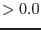

| Parameter | Mand | Type | Default | Constraints |
| sets | yes | list of data-sets | M1_image1.fits M1_image2.fits M1_image3.fits M1_image4.fits M1_image5.fits | list of valid data sets |
List of FITS files containing the input images in different bands
|
| exposuresets | yes | list of data-sets | M1_expmap1.fits M1_expmap2.fits M1_expmap3.fits M1_expmap4.fits M1_expmap5.fits | list of valid data sets |
List of FITS files containing the exposure maps for the corresponding
images listed in sets.
|
| tmpflatsets | no | list of file-names | flat_1.img flat_2.img flat_3.img flat_4.img flat_5.img | list of valid file names |
List of FITS files that will contain the temporary flatfielded
images (images divided by their corresponding exposure maps).
If this parameter is left blank, the temporary flatfielded images are
called flat_ .img, where goes from 1 to the number of images in parameter sets. .img, where goes from 1 to the number of images in parameter sets.
|
| binsize | yes | real | 0.01667 |  |
Size of the rebinned pixels in degrees for histogramming. It will be
rounded to the nearest integer multiple of the pixel size in the input
image
|
| outfile | yes | file-name | inthist.ps | valid file name |
Name of the output Post Script file containing plots of the histograms
|
| Parameter | Mand | Type | Default | Constraints |